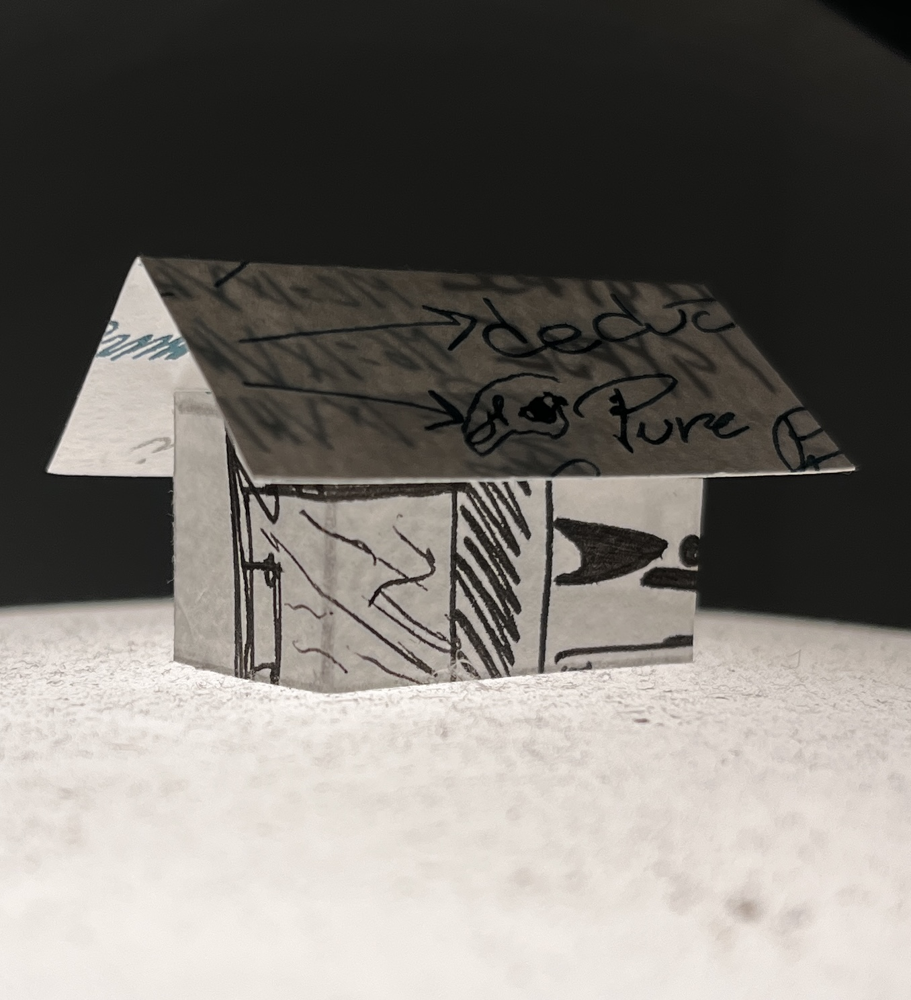

Un projet conçu dans le cadre du cours de conception, la maquette représente une petite construction offrant une zone de lecture et d'événement extérieur. Traversant une rivière et un champ de graminées, le pavillon vient s'installer en arrière de la bibliothèque du boisé. Un jeu visuel est créé grâce à la toiture de toile tendue. La pluie qui se heurte à celle-ci et à l'environnement adjacent est la source d'une immersion auditive.